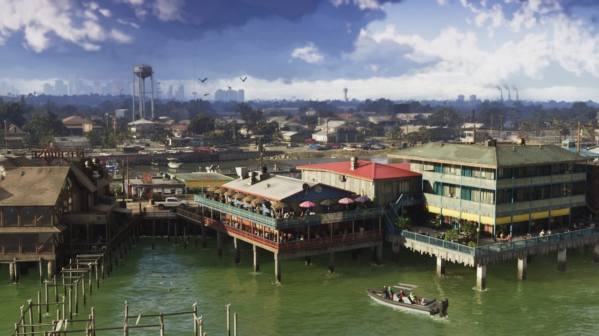

La carte de GTA 6 : Leonida et Vice City
Leonida, c'est la Floride version Rockstar : Vice City, les Keys, les marais, la côte oubliée, la campagne et la montagne. Retrouve ici tous nos guides et articles sur la carte et les lieux à visiter.
Nos articles et guides

Carte de GTA 6 : les 6 régions de Leonida expliquées
Vice City, les Keys, les marais, la côte oubliée, la campagne et la montagne : le tour de Leonida pour savoir où aller.

Argent au début de GTA 6 : 5 astuces pour ne pas finir fauché
Planque sous le plancher, plongées au trésor, voitures à revendre : ce qui marche dans les premiers chapitres, sans glitch.

L'appartement de Dexter est dans GTA 6 (et son bateau aussi ?)
Rockstar a recréé l'immeuble de Miami où vivait Dexter Morgan. On t'explique où le trouver.

Bigfoot, crabe géant, chien en jet-ski : les secrets trouvés en 24 heures
Les joueurs fouillent Leonida depuis une journée et les easter eggs tombent déjà. Voici les plus fous.
Un streamer dit avoir fini GTA 6 en 7 heures : les joueurs n'y croient pas
Le streamer N3on affirme avoir bouclé l'histoire en direct en une nuit. Rockstar, lui, parlait plutôt de 80 heures.

Œuf de Pâques géant, maison cachée depuis 2021 : les premiers secrets de GTA 6
Quelques heures après le déblocage en Nouvelle-Zélande, les joueurs trouvent déjà des easter eggs. Voici ceux qui sont relayés par la presse.

10 astuces pour bien démarrer GTA 6 (sans spoiler)
Caresser les chiens, manger en conduisant, semer la police en changeant de tenue : les réflexes à prendre dès la première heure.

« L'astuce Nouvelle-Zélande » : jouer à GTA 6 avant tout le monde, mais à quel prix ?
Le jeu se débloque à minuit heure locale. Des milliers de joueurs changent de région pour y jouer 12 heures plus tôt. On t'explique les risques.